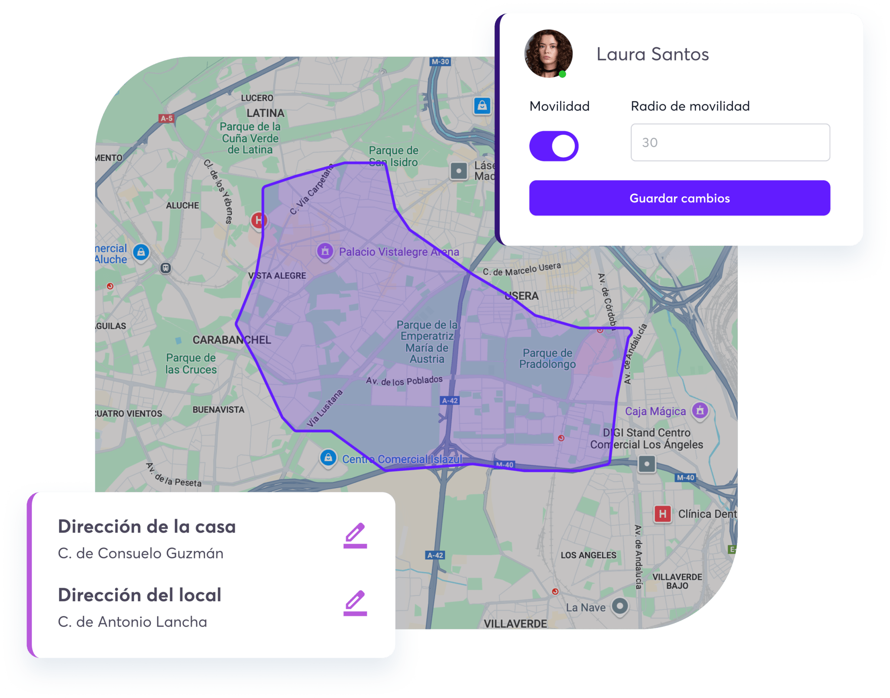
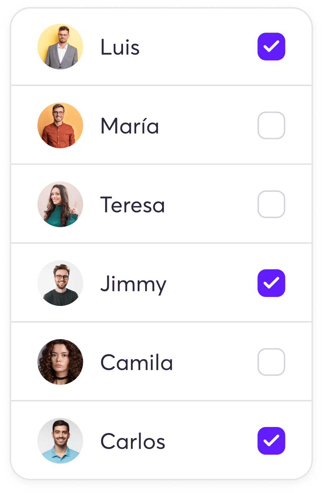
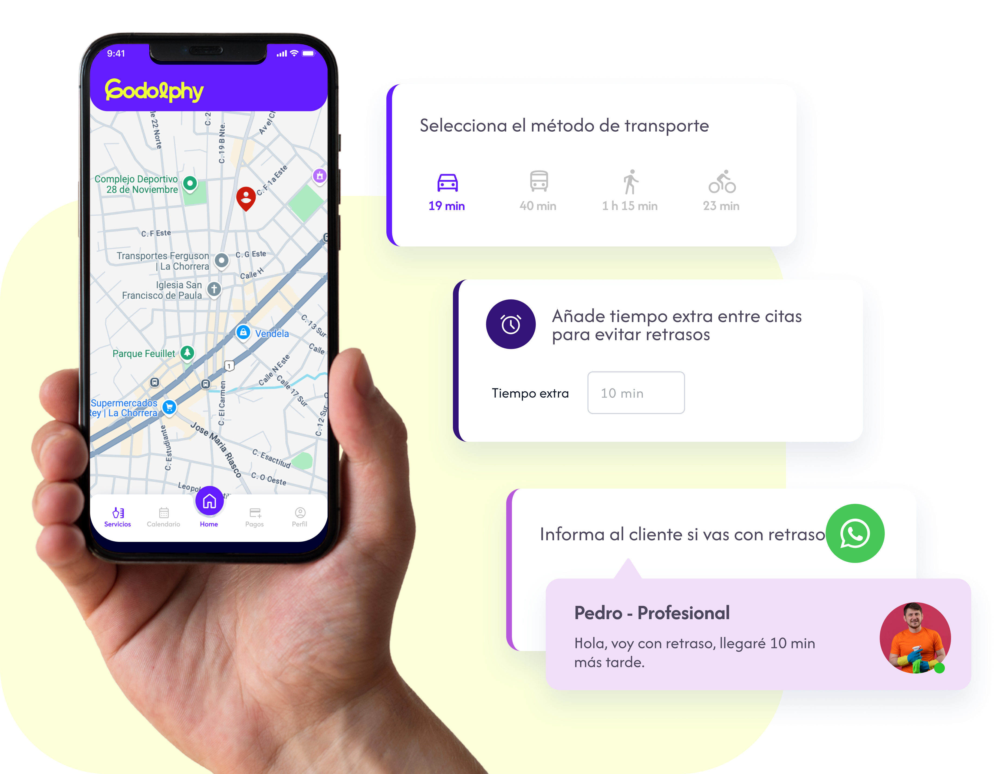

Agenda servicios en el local y a domicilio desde un mismo sitio.
Gestiona con total facilidad tanto las citas en tu establecimiento como los servicios a domicilio, todo desde una única plataforma. Tus clientes pueden elegir la modalidad que prefieren en el momento de la reserva y el sistema organiza automáticamente la agenda de cada profesional.

Los clientes reservan el servicio a domicilio online 24/7.
Tus clientes pueden reservar un servicio a domicilio desde tu web, WhatsApp o código QR a cualquier hora del día. El sistema muestra la disponibilidad real de los profesionales en movilidad y confirma la reserva automáticamente con todos los detalles: dirección, profesional asignado y hora estimada de llegada.

Configura zonas de cobertura y precios por desplazamiento.
Define las zonas donde ofreces servicio a domicilio (por ejemplo, en un radio de X km desde tu local) y establece tarifas diferenciadas por desplazamiento. El sistema aplica automáticamente el precio correcto según la dirección del cliente, evitando confusiones y garantizando rentabilidad.
Cálculo de los tiempos de servicio y de desplazamiento.
Las citas se agendan en base al tiempo de la cita y el tiempo de desplazamiento desde tu salón, dejando un margen para imprevistos.

Cálculo de distancia a pie o en transporte público.
Gracias a la integración con Google Maps podrás marcar si el profesional se desplaza en transporte público, privado o a pie, y así los tiempos se calcularán perfectamente para que no tengas retrasos.

Disponibilidad real, no teórica
La mayoría de software de reservas calcula si un profesional está libre en un horario. Godolphy va más lejos: calcula si el profesional puede llegar a tiempo.
Cuando un cliente quiere reservar un servicio a domicilio, el sistema tiene en cuenta:
Si hay 30 minutos de viaje entre cliente A y cliente B, y el servicio dura 1 hora, el sistema no ofrecerá el hueco de las 11:00 si eso hace imposible llegar a la cita de las 12:00. Solo aparecen los horarios que realmente funcionan.
Resultado: cero citas imposibles en la agenda y cero sorpresas para el profesional.
Empieza gratis hoy mismo
Sin tarjeta de crédito. Sin permanencia. 30 días para probar todo el potencial de Godolphy.
30 días gratis · Sin tarjeta de crédito
Software para servicios a domicilio — Peluquería, estética y limpieza
Ofrecer servicios a domicilio de peluquería o estética implica coordinar profesionales, desplazamientos, horarios y cobros de forma simultánea. El módulo de servicios a domicilio de Godolphy centraliza todo en un panel.
Tus clientes reservan el servicio a domicilio igual que uno en el centro: eligen profesional, hora y dirección. El sistema calcula automáticamente la ruta mediante Google Maps y carga la dirección en la agenda del profesional.
La gestión de rutas para servicios a domicilio permite al profesional ver el orden óptimo de sus visitas del día desde su móvil. Tú como administrador ves en tiempo real dónde está cada miembro del equipo y cuándo llegará al siguiente cliente.
Los cobros también se gestionan desde Godolphy: depósito al reservar, pago completo o pago a la entrega. Al finalizar el servicio se genera la factura automáticamente.
Compatible con peluquería a domicilio, estética, masajes, limpieza y cualquier tipo de servicio desplazado. Prueba gratis 30 días.
Preguntas frecuentes
Mediante la API de Google Maps. El sistema calcula la ruta óptima para cada profesional según las citas del día.
Puedes enviar la confirmación con la hora estimada de llegada automáticamente.
Sí. Godolphy está diseñado para cualquier servicio a domicilio: peluquería, estética, limpieza, técnicos de campo y más.
Software para servicios a domicilio — Rutas inteligentes y reservas automáticas
Ofrecer servicios de peluquería, estética o cuidado personal a domicilio implica coordinar desplazamientos, tiempos de viaje y disponibilidad de profesionales en tiempo real. Godolphy resuelve este reto con un módulo específico para negocios a domicilio que integra la planificación de rutas directamente con el calendario de reservas. La geolocalización del equipo en tiempo real te permite saber dónde está cada profesional y asignar la siguiente cita al que esté más cerca, optimizando los desplazamientos y reduciendo tiempos muertos entre servicio y servicio.
Los clientes reservan igual que si acudieran al salón: a través del sistema de reservas online con su dirección, el servicio que necesitan y el profesional preferido. El sistema valida automáticamente si el profesional puede llegar a tiempo según su ubicación actual y la duración del servicio anterior. Una vez confirmada la reserva, el cliente recibe la confirmación y los recordatorios habituales, y el profesional ve el itinerario del día actualizado en su aplicación móvil.
Gestionar un equipo itinerante sin las herramientas adecuadas genera confusión, retrasos y clientes insatisfechos. Godolphy elimina esa fricción al centralizar en un solo lugar la agenda, las rutas, los pagos y la comunicación con el cliente. Si además ofreces servicios a empresas o tienes varios profesionales en ruta simultáneamente, el panel de control te da una visión global de todas las operaciones para intervenir rápidamente ante cualquier imprevisto.